年夜饭吃什么才健康？其实，在我们国家，从南方到北方，从东部到西部，家家都有自己的私房年夜菜菜谱。这些传统菜是我们的前辈吃了几十年甚至几百年的东西，能够传下来、并经过时间打磨的，大多都是健康美食。
所以年夜饭您就尽情地享受家乡的传统菜，这些一般都是适合本地人体质的。
吃好了家乡的大菜，在年夜饭的宴席上，我再给您推荐一道咸汤、一道甜汤、一道鱼、一种素馅饺子，一道甜品和一种饮料。
过年一家人在一起吃年夜饭的时候，成年人有的喝酒，有的喝茶，小朋友往往喝的是加工饮料。其实，这对小朋友的身体不是很好，即便是果汁型的饮料，里面一般也含有一些防腐剂、添加剂。
如果孩子喝果汁，可以用水果自己榨汁。以前没有榨汁机，我的母亲也能自己做天然果饮。其中一种果饮“千岁饮”，很适合在年夜饭时喝。
千岁饮不仅适合小朋友喝，也适合大人喝。它可以帮助消化、解腻、降脂，还可以解酒毒，它也是一款大人在喝完酒之后很好的解酒甜品。
这道饮品非常简单，就是猕猴桃汁。自己在家里做也很方便。
猕猴桃属于餐后吃的水果
有些水果要饭前吃才健康，有些水果要饭后吃才合适，猕猴桃属于为数不多的要在餐后吃的水果，因为它含有一种酶，是可以帮助身体来消化油脂的。
猕猴桃又被称为千岁鲜果，在节日宴席中吃猕猴桃，对于老年人来说也有祝寿的意思。
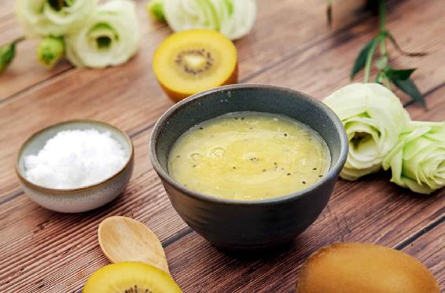
自制猕猴桃汁
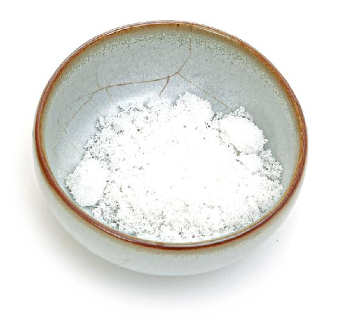
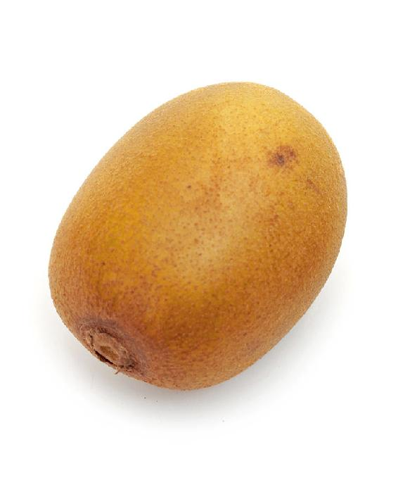
原料：猕猴桃、水、糖。
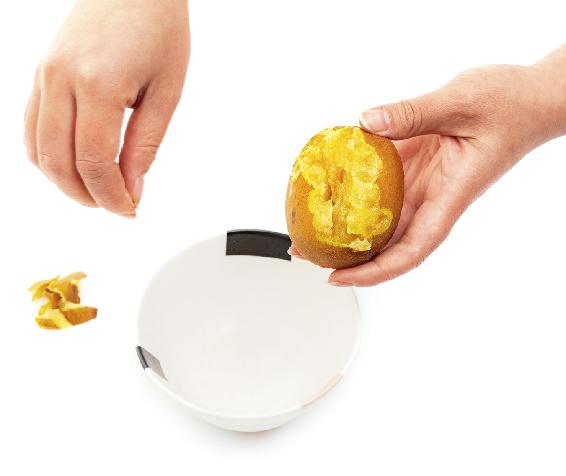
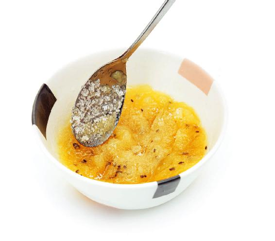
做法：
选软的猕猴桃，剥去外皮，将果肉放在碗里用擀面杖或者勺子捣碎，加一点水和糖搅匀，一杯绿绿的猕猴桃汁就做成了，味道还挺不错的。
猕猴桃，糖尿病人也可以吃
糖尿病人也可以吃猕猴桃，因为它的含糖量比较低，还能调节人体对糖的代谢，有防治糖尿病的作用。糖尿病中有一种表现就是特别的口渴，在古代，中医把这种叫作消渴病。其实，从唐代开始，中医就用猕猴桃治疗消渴病了。
如果家里有糖尿病人，您给他喝猕猴桃汁，不加糖，或者加罗汉果提取的代糖就可以了。
1.解酒毒，保肝
它能解酒毒、保肝，清除血液中的酒精，解酒的效果相当不错。
2.帮助肠道消化，降油脂
餐后吃猕猴桃还能帮助肠道消化，降油脂。
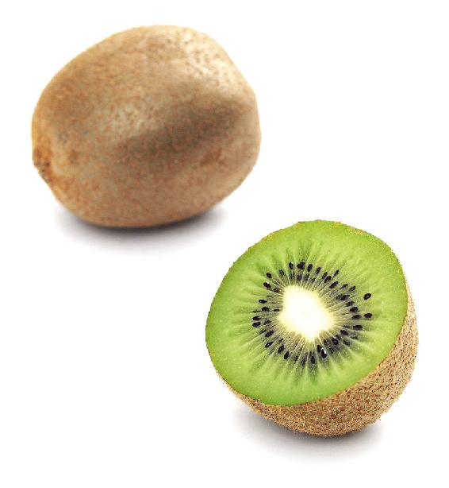
3.防止吃炒货口干
猕猴桃中维生素C的含量非常丰富。过年的时候守岁，一家人坐在一起看春晚，这时候往往都要准备一点瓜子、花生吃。这些炒货吃多了以后是很耗伤人体的水液的，容易让人口干舌燥，舌头有时候还会起泡。猕猴桃正好可以平衡这些炒货的火性，它可以滋阴、生津。
为什么这道果饮叫“千岁饮”呢？因为猕猴桃又被称为千岁果，在节日宴席中吃猕猴桃，有祈福健康长寿的寓意。
读者评论：以后过年不用买饮料了
Donna：以后过年不用买饮料了。猕猴桃里有一种酶，可以帮助消化大鱼大肉。
允斌解惑：饭后喝什么？
敏二好学：饭后喝猕猴桃汁，还是什果银耳羹？
允斌：什果银耳羹是年夜饭的最后一道，而猕猴桃汁是饮料，两个都可以喝。
1.茴香，回乡
北方的朋友在过年的时候是必须要吃饺子的，我推荐您吃茴香豆腐馅的饺子。
过年吃茴香豆腐馅的饺子是有寓意的，就是茴香的谐音是“回乡”，回到家乡。以前，讲究的人都要吃素馅的饺子。
茴香豆腐馅饺子的做法非常简单，把小茴香菜跟豆腐一起来剁，成馅后就可以用来包饺子了。
茴香豆腐馅饺子第一有回乡的寓意，第二它是素的。过年吃素馅饺子，这是老规矩，寓意这一年过得非常清净，不会有多余的烦恼。
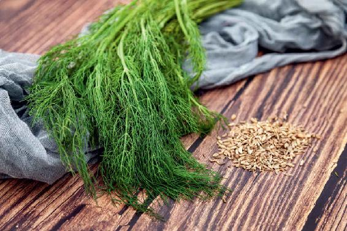
2.吃茴香豆腐馅饺子，能够补肾的阳气
茴香是蔬菜中的补阳菜，是温性的，有补肾阳的作用。它对于所有的寒症都是有保健作用的，比如，手脚发凉、胃寒、体质虚寒的人都很适合吃茴香。
过年吃茴香饺子，可以暖胃祛寒，预防过年时过食生冷油腻引起的胃痛。由于新年时入春了，温补肾阳需要防止上火，所以茴香馅儿里配了豆腐，豆腐是凉性的，可以平衡茴香菜的温性。
您在吃的时候，不妨搭配腊八蒜和腊八醋一起来吃，味道会更好。
读者评论：味道真是绝了
小1：茴香豆腐馅的饺子，再配上腊八蒜，味道真是绝了，允斌老师吉祥安康！
咩咩：好好吃，茴香馅儿饺子特别适合我，暖胃祛寒。
年年有余，年夜饭是不能少了鱼的。
鲤鱼跳龙门这道菜，就是用泡菜烧鲤鱼。
做河鱼很适合放泡菜，泡菜解毒杀菌，去鱼腥味，做出来的鱼特别好吃。
鲤鱼补阳，也去水肿。身体有点水肿的人，可以常吃鲤鱼。肝腹水的人，日常饮食调理也可以吃鲤鱼。
老人们认为鲤鱼是发物。我家有一个小秘诀，给想吃鲤鱼又怕发的人：炖鲤鱼时加上几粒花椒籽。
我们平时吃的花椒是花椒果外面的一层皮。花椒里面一粒一粒黑色的，就是花椒籽。上等的花椒是要把这些籽去掉的，因为籽有苦味。去掉的籽用来做中药，称为“椒目”。
花椒籽是祛毒的也是祛湿的，所以把它和鲤鱼放在一起，可以平衡鲤鱼的发性。
有一道治头晕很有名的药膳——天麻炖鱼头。有些人用了以后，感觉效果不是那么的好，其实这里有两个秘诀：
1.天麻炖鱼头要用鲤鱼的头。
2.加花椒籽当药引子。
花椒籽引药入脑，只有加了花椒籽，功效才能到十分。
鲤鱼是补阳的。如果要论养脾胃，好消化，可以吃鲫鱼、带鱼。
鲫鱼是河鱼中最养脾胃、最好消化的，适合脾胃虚弱的人吃。但因为刺比较多，所以通常用来炖汤。
带鱼是海鱼中养脾胃的鱼，也是很好消化，适合脾胃虚弱的人来吃的。
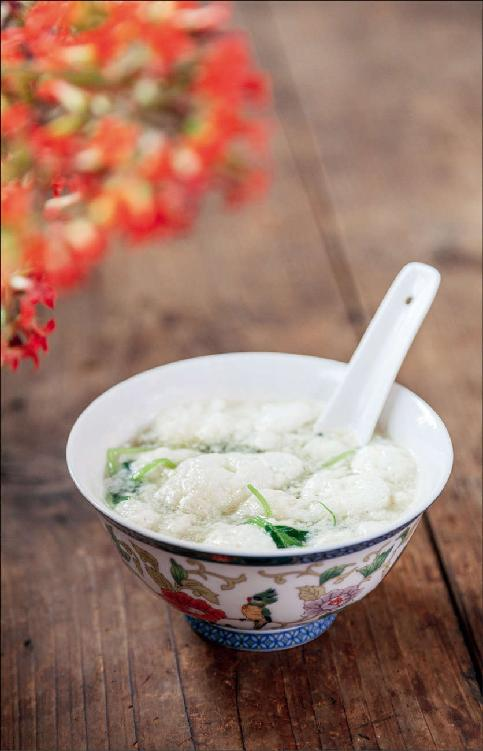
年夜饭不一定都是很贵的食材，用普通的鸡蛋也能做出不一样的味道。
做鸡酪汤的要点，是要将鸡蛋清打成雪白的泡沫，直到可以立住筷子。在以前没有打蛋器的时候，我们的秘诀就是用四根筷子，用力地打，就能将蛋清打发。
可以取10个鸡蛋，将蛋清和蛋黄打到两个盆里。用蛋清来做一道补气安神的鸡酪汤，孝敬老人；再用蛋黄做一道益智补脑的甜黄泥，给孩子吃。
过年喝这道汤有三个好处：
1.守岁时喝，可以补气解乏。
2.滋养心肾。
3.有助于缓解天冷时老年人容易出现的小腿皮肤干痒。
给老人做好补气安神汤，再用留下的鸡蛋黄，加上一点猪油或黄油、白糖，下锅炒熟，就做成一道给小孩增长智力的甜品——甜黄泥。
它也相当于一道温和的“阿胶补血汤”，可以滋养心血，儿童多动、血虚可以经常吃一些。
关于这两道方子的具体做法和功效，可以参照《回家吃饭的智慧》。
鸡酪汤
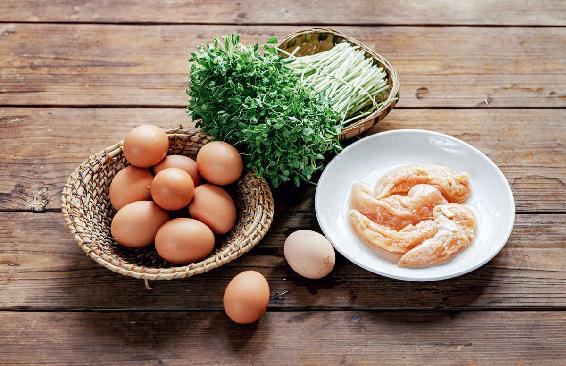
原料：鸡蛋、鸡胸肉、青菜。
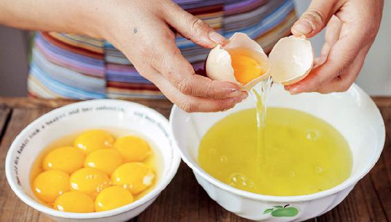
做法：
1.取10个鸡蛋，将蛋清和蛋黄打到两个盆里。
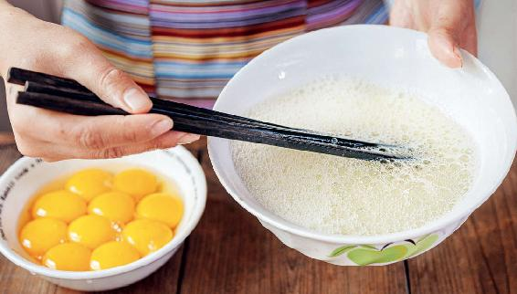
2.把鸡蛋清打散。
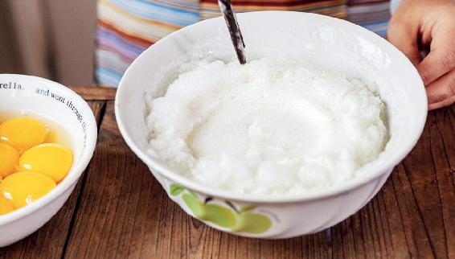
3.把鸡蛋清打成蓬松的泡沫状。
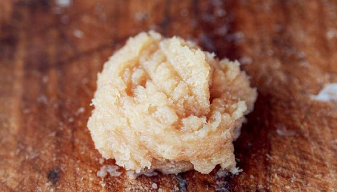
4.鸡胸肉切碎末，锅里烧开鸡汤，倒入鸡胸肉搅散，再放入鸡蛋清，凝固后马上关火。把青菜垫在碗底，将鸡酪汤倒进去即成。
我家的年夜饭中，一道什果银耳羹是必不可少的，从小吃到大。
过年时全家聚在一起，聊天、忙碌，难免耗气又伤阴，此时喝一碗银耳羹，润肺补气滋养五脏，又极易消化。
什果银耳羹
做法：
1. 先炖银耳，用电炖锅小火慢慢地炖几个小时最好。没有时间的话，也可以用《回家吃饭的智慧》书中教过的懒人炖法。
2. 银耳炖到滑滑的胶质口感后，把苹果、杧果、猕猴桃等各种水果切成小丁，入锅煮一滚，撒入枸杞，关火起锅。
这道甜汤可以最后再上桌。年夜饭一道道煎炒烹炸的菜吃下来，最后来一碗清甜滑润的银耳羹，从口腔、食道一直到胃，都会觉得舒服极了。
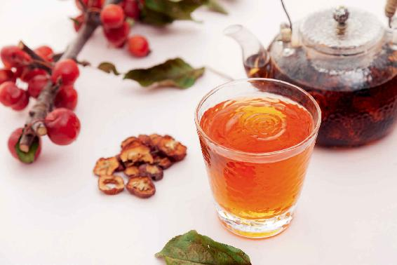
在春节的七天长假里，我们每天可能都免不了聚餐。那么，吃撑了怎么办？
过年的时候，我们吃的东西五花八门，不同食物吃多了，应对的方法其实也是不同的。
我们可以预先准备这几样材料：橘子、萝卜、山楂、大蒜、酱豆腐。
1.肉吃多了，用山楂来消食
肉吃多了，最容易解腻的就是山楂。其实，在做肉的时候，在里面放一点山楂、陈皮，都有消食、解腻、分解肉食油脂的功效。如果您吃肉吃撑了，我建议您取一点干山楂，把它放在锅里炒，不要放油，直接把它炒黑，然后加一点水把它煮开。稍冷后喝，可以消化肉食。
2.米饭吃多了，用锅巴煮水喝
米饭吃多了怎么办呢？用锅巴来煮水喝，对消除米饭吃多了之后的饱胀感有很好的作用。
3.面食吃多了，喝原汤化原食
面食吃多了怎么办呢？比如，北方人常吃的馒头、面条，其实原理是一样的，就是“原汤化原食”，原食炒焦了吃。
您可以多喝面汤、饺子汤。如果真的吃得太撑了，比如，吃饺子吃得太撑了，您可以把馒头放在火上烤焦了吃。这对于吃面食过多造成的烧心（胃灼热）、饱胀有很好的消除作用。
4.鱼吃多了，吃一点酱豆腐
过年的时候大家都讲究一个美好寓意——年年有鱼（余），每家都要吃鱼。鱼肉相对其他肉来说比较好消化，一般不容易吃撑，但有的人吃完鱼之后，会觉得有点难受，有一点恶心，因为鱼肉是生痰的。
如果您想要吃鱼肉后还很舒服，首先不要去鳞，鱼肉和鱼鳞的营养是互相补充的。鱼肉是通的，鱼鳞是收的；鱼鳞含有胶原蛋白。如果您觉得鱼鳞吃起来的口感不好，还可以做成鱼鳞冻或者炸鱼鳞，这样吃起来味道也不错。
如吃了鱼以后有一点恶心的感觉，我建议您吃一点酱豆腐，酱豆腐可以很好地解除由于吃鱼过多造成的身体不舒服，还可以解腻去腥。
5.酒喝多了，食用橘子皮泡的水或糖醋汁拌的白萝卜
酒喝多了怎么办呢？给大家分享一个我的解酒小偏方，“千杯不醉茶”，也就是川陈枳椇四物饮，原料有枳椇（别名：拐枣）、葛花（脾胃差的人换成葛根）、山楂和陈皮。
如果您来不及去药店配这几样东西，又怕酒喝多了难受，怎么办呢？我教您两个应急的小方法，对酒后的不适有减轻的作用。
第一个方法：您在喝酒的时候，如果餐桌上的果盘中有橘子，那就赶紧抓一个橘子，把它洗干净，用橘子皮泡水喝。这样可以很好地预防酒后的恶心、呕吐。泡的时候，最好加一点糖或者盐进去，效果会更好。
第二个方法：用糖醋汁拌白萝卜。有的朋友喝完酒的第二天脸色发青，胃里也特别难受，一点都不想吃东西，有时候甚至能难受一整天。这时候您取一点白萝卜，拌上一点糖醋汁吃下去，胃口就打开了，人也会舒服很多。
这两个应急解酒的小方法，用橘子皮水解酒，这个小方在喝酒的时候用效果比较好；而糖醋汁拌白萝卜的方法主要是缓解酒后第二天的不适感，特别是对于肠胃的不适，效果比较好。
您可以根据自己的情况来选择，当然最好还是配好解酒茶。因为解酒茶不仅能消除当时饮酒的不适感，减轻酒精对肝脏的损伤，还能预防酒精在大脑中的蓄积，预防由于酒精引起的脂肪肝、动脉硬化，或者是阿尔茨海默症这样的一些后遗症。
宋人高翥曾写道：“长忆儿时二老傍，元正岁岁有风光。搀先礼数修人事，着好衣裳侍酒觞。回首不堪追日月，感情空叹换星霜。尚期我老如亲老，却看儿童作节忙。”
这首诗的意思就是诗人想起了他小的时候，每一年正月都是和父母一起过的。那时候很讲究礼仪，新衣服要穿得整整齐齐的，要搀扶父母，服侍父母喝酒、吃饭。现在回首往事，很是感叹。希望自己年纪大了以后也能像父母一样跟自己的儿女、孙辈一起过节，一家人热热闹闹的。
这首诗反映出了我们中国人传统的家庭观念。新年是一家人在一起团聚的日子，能有父母和儿女相伴的节日是最幸福的。无论是多大的人，过年时能陪在父母身边，也会拥有孩子一般的欢喜，幸福得像个孩子。这才是过年对我们身心最有益的事。